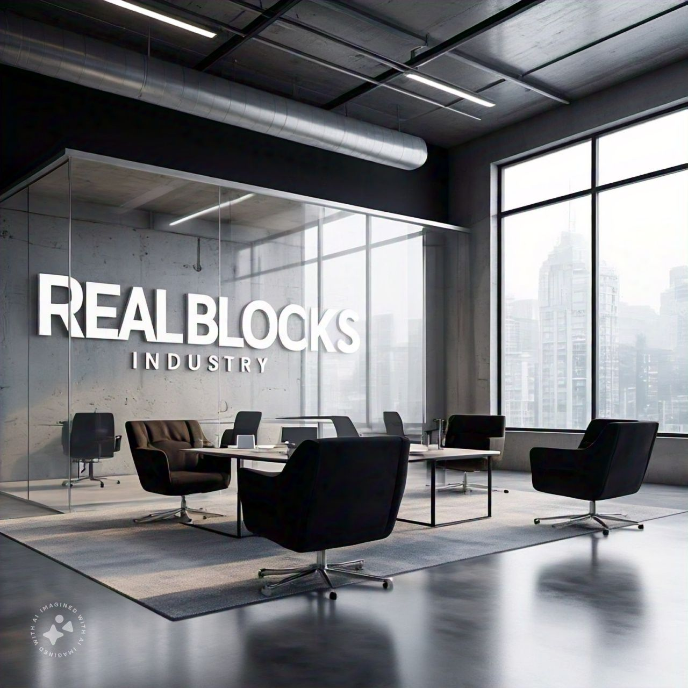

HISTORY
As the clock struck midnight on January 1, 2022, Azeez stood in his small apartment, gazing out the window at
the city skyline. He had always dreamed of starting his own industry, one that would create jobs, drive
innovation, and make a lasting impact on his community.
Growing up in a family of modest means, Azeez had learned the value of hard work and determination. He worked
multiple part-time jobs to support himself through college, where he earned a degree in engineering. After
graduating, he landed a job at a local manufacturing firm, but he soon realized that his true passion lay in
entrepreneurship.
For months, Azeez poured his heart and soul into developing a business plan for his industry. He conducted
market research, secured funding, and assembled a team of talented engineers and technicians. Finally, on a
crisp morning in March 2022, Azeez stood outside the gates of his newly leased factory, a sense of pride and
trepidation washing over him.

He named his industry REAL BLOCKS INDUSTRY, reflecting his commitment to building a stronger, more sustainable
future for his community. The factory would produce high-quality building materials, including concrete blocks,
bricks, and other essential components.
The early days were not easy. Azeez faced numerous challenges, from equipment malfunctions to staffing
shortages. But he persevered, relying on his quick wit, resourcefulness, and unwavering dedication to his
vision.
As the months passed, REAL BLOCKS INDUSTRY began to take shape. The factory hummed to life, producing innovative
products that quickly gained traction in the market. Azeez's team worked tirelessly to meet the growing demand,
and soon the industry was supplying materials to construction projects across the region.
By the end of 2022, REAL BLOCKS INDUSTRY had created over 50 jobs, generated significant revenue, and earned
recognition as a leader in the field of sustainable building materials. Azeez's dream had become a reality, and
he knew that this was only the beginning.
As he looked out over the factory floor, Azeez felt a sense of pride and accomplishment. He had taken a risk,
worked tirelessly, and created something truly remarkable. And as he gazed up at the stars, he knew that the
future held endless possibilities for REAL BLOCKS INDUSTRY and the community it served.